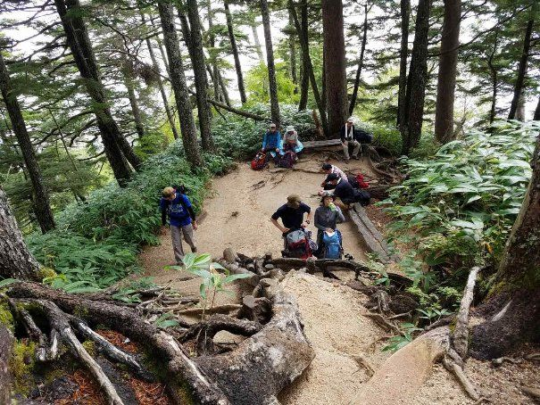
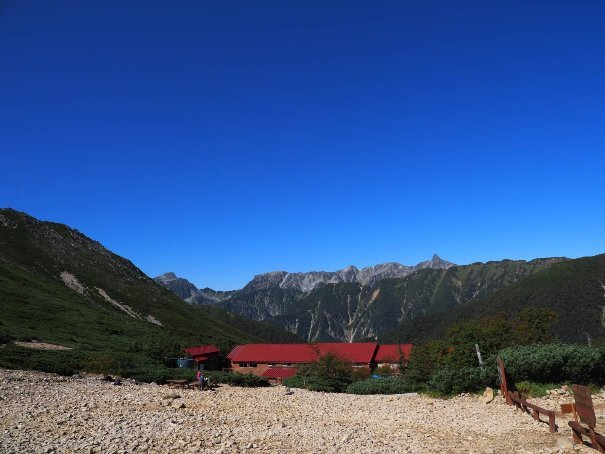

| 百名山ピークハント Vol.2: Episode 006-010 (The BBB: Breakthrough Bandwagon Books) | |
| 穂高 | |
| The BBB: Breakthrough Bandwagon Books (2018) | |
Ja panese 100 Great Mountains Vol.2: Episode 006-010 ( Jp )
（邦題『百名山ピークハント Vol.2: Episode 006 -010 』）
Originally written in Japanese and translated by Hodaka
Photographs by Hodaka
Cover design by Tanya
Copyright © 2018 Hodaka / The BBB: Breakthrough Bandwagon Books
All rights reserved.
ISBN: 978-1-387-70483-5
Episode 006 : 会津駒ケ岳

7 月 （ 2017 年） に天城山に登った 10 日後、福島県にある標高 2 , 133m の会津駒ケ岳に登ってきました。会津駒ヶ岳は尾瀬国立公園の北側に位置し、山頂に広がる雄大な湿原が特徴で池塘 （ちとう） と高山植物が点在する楽園のような山です。このタイミングで登山したのは、天城山で出会った百名山 制覇まであと 1 7 座という男性（ Episode 004 参照）が この日に登ることになっていたので、サプライズで再会しようと考えたからです。この男性は、しばらく関東で山を登り続けるということだったので、食料やドリンクを買い込み、差し入れするつもりでやってきました。
会津駒ヶ岳へのアクセスは決していいとは言えず、高速道路を降りてからの下道が長く、田舎道をさらに 2 時間近く走り抜け、いかにも日本の故郷という感じの檜枝岐村 （ひのえまたむら） へ入っていきます。前の晩に東京を出て、途中で車中泊をしながら、 5 時前には登山口 の駐車場 に到着 し ました。
この駐車場は約 20 台 停められる のですが、ほとんど満車に近い状態で 、平日のこの時間でこんなに混むとは全く予想していませんでした。ここに停められないと少し下った ところ に駐車して歩く時間もかかるので 、 なんとか停めることが出来てラッキーで した。到着してすぐに駐車してある車のナンバーを確認しましたが、あ の男性の出身である山口県ナンバーは見当たりませんでした。これから到着するかもしれないので、とりあえず登り始めることにしました。
駐車してあった車の台数から 分かっていましたが登山者も多く、特に高齢の夫婦２人で登っている登山者が多く見受けられました。最初からわりと急な登りが続き、しばらくは視界が制限 されているので我慢して登ります。
樹林帯を超えてからの展望は凄まじく、山頂や山小屋が見えてくると気分的にもかなり楽になります。草原の中を歩いている感じで、樹林帯では感じられなかった風が心地よく、自然と汗も引いていきます。
２時間近く登ると、入口から見える熊の皮が有名な「駒の小屋」という山小屋に到着します。山 小屋の前は広く開放的で、駒ノ大池とその背後にそびえる会津駒ヶ岳に 臨め、会津駒ヶ岳の中でも有名な撮影スポットのひとつです。ここの山小屋 は 食事 は なく素泊まりだけですが、宿泊者同士が酒を持ち寄って交流することが多く、それを目当てに泊まる登山者もいるそうです。
予想外でしたが、山小屋前あたりからま だ相当な雪が残っていました。雪は踏み固められてアイゼンが必要なほど ではありませんでしたが、この先も所々で雪が残っているので慎重に進んでいきます。
小屋から続く木の板で出来た道を進んでいくと、 15 分ほど で会津駒ヶ岳の山頂に到着します。背丈を軽く超える立派な山頂標識 がありますが、積雪時期は標識が完全に埋まるくらいまで雪が積もるほどです。頂上はそれほど 広くはありませんが、天気がいいと遠くの山々までパノラマビューが楽しめます。
百名山だけを目指すなら会津駒ヶ岳が目的になりますが、会津駒ヶ岳へ登るならここから 30 分ほど 歩いた先にある中門岳へ行くことを強くお勧めします。ここの稜線は山の上とは思えないほど広大な湿原が広がり大小無数の池塘が点在し、アップダウンも少ないので天空を散歩している気分が味わえます。
中門岳の山頂は湿原が広がる静かな場所で、周囲の木々と空の青さが池に反射して、絵本に出てきそうな美しさでした。山頂というにはあまりにも平坦な場所ですが、これが湿原を有する山のスタイルであり、湿原の周りは多くの花に彩られています。中門岳の先はまだ道が続いていて、小高い丘の上で一周するようになっています。山の上に池があるのがちょっと不思議な感覚ですが、これまでの登山では味わえなかった景色が楽しめました。
登山日和ということもあり、だんだん 登山者も増えて、すれ違う度に自然と会話も多くなってきます。「この先に花は 咲いてましたか ？」 、 「いい写真は撮れましたか？」 、「あの山の名前は分かりますか？」などと 話しかけられ、賑やかな登山となりました。
午前中には下山し始めて、これから登ってくる登山者を注意して見ていましたが、天城山で出会った男性と会うことはできませんでした。出会った日から 10 日経っていることもあり、どこかで予定を変更したのかもしれません。
お昼過ぎには下山して、まずやることは温泉を探すことです。登山口近くにはいくつか温泉があるので、下山後の入浴に困ることはありません。車で数分の「燧 （ひうち） の湯」は解放感がある露天風呂もあって、そこで汗を流しました。
だいぶお腹も空いてきたので食事を取ることにしましたが、ここ檜枝岐村でぜひとも食べたい料理がありました。それは、山人（やもうど）料理と呼ばれる郷土料理です。
高地にある檜枝岐村は稲作には適さず、山菜やキノコ、山や川の生き物、寒冷地でもよく育つ蕎麦 （そば） などを使った料理が生み出され、現在まで引き継がれてきました。これは山に入って働く男性のために、女性たちが限られた食材で工夫を凝らした料理です。
登山口周辺にはいくつか山人料理の看板を掲げたお店がありましたが、目についた一軒のお店に入りました。「裁ちそば」は伸ばしたそば生地を折らずに何枚も重ねて切っているため、コシがあります。そば粉ともち米を練り、 えごまやきな 粉をつけたモチモチとした食感の「はっとう」なども堪能しました。登山後はつい高カロリーなものを食べたくなりますが、このさっぱりした蕎麦はとても美味しくいただけました。 また、メニューにはなく食べ ら れませんでしたが、山の沢に生息する山椒魚も名物で塩焼き、唐揚げ、天ぷらといった形で食べられています。
会津の奥に位置する 秘境の ような 檜枝岐村 に は素朴な味わいと山に生きる人の温もり が感じられ、 日帰りにするにはもったいな いので 民宿を利用して また来たいと思います。
Episode 007 : 武尊 山
武尊山（ほたかやま）は群馬県の北部にそびえ、沖武尊 （おきほたか） を主峰とするいくつかの峰と広い裾野を持つ独立火山で、山頂からの展望も素晴らしい山として知られています。山の名前については、初見でこれを「ほたか」と読むのは困難でしょう。「ほたか」というと北アルプスの穂高岳を連想するので、区別するためによく上州武尊山と呼ばれたりします。
登山道はいくつかありますが、どのルートも日帰り登山としては結構きつく、公共交通機関は使えないのでタクシーかマイカーを利用して行くことになります。今回は首都圏からアクセスもいい武尊神社のある登山口から登ることにしました。ここの登山口は隣にキャンプ場があるので、ここを利用して前泊すれば余裕のある登山となるでしょう。すぐ近くにある有名な谷川岳と比べると格段に人が少なく、静かな登山が楽しめます。
6 時前に武尊神社を出発してしばらく平坦な道を進んで行くと、 40 分ほど で武尊山と剣ヶ峰の分岐点に出ます。周回するのでどっちに進んでも良いのですが、岩場の登りを楽しみたかったので武尊山方面へ向かいました。
このコースの面白いところは、鎖、ロープ、梯子がある急斜面な岩場が続くところです。
一見すると危なくてきつそうですが、足場もしっかりしているので十分注意して登れば問題なく、一気に標高を稼げるので単純な登山道よりもスリリングな登りを味わえます。
頂上までの最後の登りは一面のシャクナゲに覆われ、そこを超えて 標高 2 , 158m の山頂に達すると 、 360 度開けている雄大な展望と 、 山の形をした特徴のある山頂標識が待っています。
武尊山は修験道の山です。ひと 昔前までは女人禁制で 、 岩場の登りが厳しく、アプローチの 標高差 は 1 , 000m 以上あり、元々 、 普通の人が登れる山とは言えませんでした。今でも百名山巡りのハイカーに混ざって、「六根清浄 （ ろっこんしょうじょう ） 」を唱えながら登る白装束の集団に出会ったりする信仰の山でもあります。
この武尊山の山頂から少し進ん だところに、日本武尊（ヤマトタケルノミコト）の像が建ってい ます。また、 1 時間半ほど下った前武尊には 、 もっと大きな日本武尊の像があります。
その昔、武尊山には北アルプスの穂高連峰と同じ く 穂高見命（ホタカミノミコト）という神が祀られていて、「保鷹山」「穂高山」などと違う漢字で記されていた時代があったと言います。そして、日本武尊が東方征伐時にこの山に立ち寄ったエピソードから「武尊」の漢字を当てたのが現在の山の名前とされています。武尊と書いて「タケル」とは読まずに、「ホタカ」と読むのは、この山を知らない人ではまず無理だと思います。
今回利用した武尊神社の登山口のすぐ下には「裏見ノ滝」と呼ばれる落差 80m の豪快な滝があり、文字どおり滝の裏側を通れて滝を裏から見ることが出来ますが、この滝に日本武尊が立ち寄って水垢離（みずごり）をしたという伝説が残っています。
武尊山主峰である沖武尊の頂上から見える剣ヶ峰は、一段と突き出ているため、ひときわ目立っていますが、この日は雲が多く、流れる雲で見え隠れしていました。この山頂から剣ヶ峰を超えて、周回する感じで登山口へ下山していきます。
登 りほど急な斜面はありませんが、慎重に下っていきます。途中、背丈ほど ある笹の間の細い道を通りますが、笹の奥でカサカサと物音がしているのが気になっていました。まさか熊でもいるのかなという考えが一瞬過ぎりましたが、気にせずどんどん下山していきました。すると、トレイルランニングをしている人が下から登っ てきて、真剣な顔で「この先で熊を見かけたので気を付けてください 」と言われました。
あの笹の中の音が熊だったかどうかは分かりませんが、ぞっとしました。これまで山で熊に遭遇したことはありません。まずは音を立てるものを考えましたが、今回、クマ除けベルを置いてきたことを後悔しました。このまま何もせずに進むのは不安もあったので、以前、丹沢に登ったとき （ Episode 003 参照） 、途中で話した人に熊に出会った話を聞いたことを思い出しました。その人は熊に遭遇したとき何も持ってなかったので、空気を入れた紙袋を叩いて大きい音を出して追い払ったそうで、「いざというときは覚えておくといいよ」と言われました。そこで、行動食用のパンの袋を用意して、いつでも大きい音を立てる状態にして、ヒヤヒヤしながら下山しました。
まさかあのときのアドバイスを実際に実践することになろうとは思いもよりませんでした。結局、熊には遭遇しないで無事に下山することが出来ましたが、これからはクマ除けベルは常備しておこうと思いました。
Episode 008 : 常念岳

関東近辺や南アルプスを登山するときはマイカーで行くことが多いですが、北アルプスへ行くには高速バスを利用することもあります。公共交通機関を利用して行くと、移動中は自由に過ごせるということだけでなく、登山口を気にせず山から山へ縦走が出来るメリットがあります。つまり登りの登山口とは別の登山口に降りられるので、行程も広がるわけです。
今回は北アルプスの中でも、入門コースとも言われる常念岳へ行ってきました。登山口となる中房温泉から燕岳 （つばくろだけ） －大天井岳 （おてんしょうだけ） －常念岳－蝶ヶ岳－上高地までを縦走し、その素晴らしい景観から 「 アルプスパノラマ銀座 」 と呼ばれる人気のルートです。
バスタ新宿から約４時間近くかけて、長野県の安曇野穂高へ向かいました。このバスタ新宿は 2016 年に完成し、１日 1 , 600 本近くのバスが発着するという巨大バスターミナルです。今回、初めて利用しましたが、これまでの乗り場を考えるとアクセスも施設も非常に快適でした。当初は夜行バスで早朝に着いて、すぐに登る計画していましたが満席だった為、 15 :05 発の便に変更して、ホテルに泊まりゆっくりと夜を過ごすことにしました。
バスの席は空席も多くて、リラックスして過ごせました。前日まで全国的に天候不良でしたが、明日からは回復しそうで、バスから見る空も晴れ渡っています。移動中は山の地図を見てルートや行程時間を検討 したり 、読書をして過ごしました。途中にサービスエリアで２回休憩して、 19 時頃に安曇野穂高に到着し、初めての街を散策しながらホテルに向かいました。
登山口である中房温泉行きのバスの時刻（ 06:40 発）まで、 だいぶ余裕を持ってホテルを出ました。それは穂高神社をお参りしたかったからです。ハンドルネームにもしている名前の神社なので特別な感じがありました。
神社で時間をかけて写真を撮った後、駅前のバス停に行くと、既に登山者の列が出来ていました。さらに駅から出てくる登山者が次々に並び、列は長くなってきます。時刻どおりにバスが到着しましたが、満席となり乗り切れませんでした。
運転手が「バスを増発しているからもう１台来るよ」と話していましたが、この時間がなんとももったいなく感じてソワソワします。しかし、気が付けば駅前に１台のタクシーが停まっていました。すぐに前後の登山者３人に声を掛けて、「乗り合い で タクシー で 行きませんか？」と提案したところ、全員、即答で快諾してくれたので、すぐにタクシーの運転手に交渉しに行きました。運賃も４人で割り勘すればバスとほとんど変わりません。登山口までノンストップで行けるし、移動中も運転手が観光案内もしてくれたので、タクシーにして大正解でした。
運転手によると昨日まで天気が悪く、今日から快晴となるので登山者も多くなりそうとのことでした。中房温泉が近付いてくると硫黄 （いおう） の匂いが漂ってきました。バスよりも相当早く着けて、声を掛けた登山者にお礼を言われ、余分に出たおつりは譲ってくれました。
登山口のマイカーの駐車場 もほぼ満車に近く、大勢の登山者で賑わっていました。タクシーで同乗した 他の３人とはここで別行動になり、軽い準備体操をした後、登山届をポストに入れて、いよいよ出発です。
まずは最初の山となる燕岳を目指します。燕岳は日本百名山に選ばれていないにも関わらず北アルプスでも人気の山の一つで、別名「北アルプスの女王」とも言われます。中房温泉からの登山道は、合戦尾根と呼ばれ「北アルプス三大急登」の一つとされています。確かに急ですが整備が行き届いており、定期的にベンチがあるので比較的登りやすいです。

7 割ほど 登ったところで合戦小屋という休憩小屋に到着します。この小屋では夏から秋にかけてスイカが売られていることで有名で、１カット 800 円 で 数人 で 食べるとちょうど良さそうです。通常、登山道の途中にある山小屋へは歩荷 （ぼっか） で運ぶことが多いですが （ Episode 003 参照） 、ここの山小屋はケーブルを使っ て 荷上げ をしていま す。
きつい合戦尾根を登り切り、約４時間で稜線に建つ燕山荘 （えんざんそう） に到着しました。この燕山荘は収容人数 600 人、手の込んだ食事にケーキ、夜はホルンの演奏会もあり、山岳雑誌の登山者へのアンケートで泊まってみたい山小屋の第一位にも選ばれた人気の山小屋です。
標高 2 , 763m の燕岳はこの燕山荘から 30 分ほど のところにあります。燕山荘からでも北アルプスが一望できる最高の景色が楽しめますが、多くの人が燕山荘に大きいザックを置いて、最小限の荷物だけ持って燕岳の頂上を目指してピストンします。燕岳は白い花崗岩の岩肌で不思議な形の岩が特徴的です。 SNS などによく投稿される有名なイルカ岩をはじめとして、自然が作り出した芸術的な造形の岩を堪能しながら頂上を目指します。頂上は狭く、小さな岩の横に座って記念撮影が出来るようになっていて渋滞となっていました。
燕山荘から大天井岳、常念岳へと続く稜線は、右手に槍ヶ岳から奥穂高へと続く山々を眺めながら縦走する最高のコースです。それにしても、あれだけ混雑していた燕山荘もこの稜線歩きになると一気に登山客は減りました。多くの登山者は燕山荘に泊まるか、日帰りで登っているからまた下山するのでしょう。
ここからはきつい登りはなく、北アルプスの大パノラマを見ながら快適に歩くことになります。しばらく登山者もなく一人で歩いていると 、 雷鳥のヒナを目撃しました。かわいくて癒されたのですが、再び歩き出すと 30m ほど 先に黒いモノが動くのが目に入りました。よく見るとそれは小熊のようでした。急いでカメラを構えてシャッターを切りましたが、すぐに木の茂みの中に入っていきました。小熊と遭遇すると近くに親熊がいるから危険といいますし、登山道のすぐ横だったので少し不安でしたが、今回はクマ除けベルを持ってきていて、念のため取り付けました。以前、武尊山で熊とニアミスしていましたが （ Episode 007 参照） 、初めて熊を目撃出来たことは貴重な体験となり ました。
この日泊まる大天荘では、朝タクシーで一緒だった 2 人と再会することになり、山小屋の夕食を一緒に取り、ビールで乾杯をしました。食後、夕日が沈んでマジックアワーだったので、外に出て写真を撮りに行きました。幻想的な美しさに寒さも忘れて、夕日と槍ヶ岳のシルエットを暗くなるまで見続けていました。
縦走２日目となるこの日も朝から晴れ渡り、小屋から 10 分ほど の大天井岳の頂上に日の出を見に行きました。
今日泊まる山小屋までの行程時間はコースタイムで約８時間とハードな一日になりそうです。昨日から右手に見ている槍ヶ岳から穂高岳までの稜線は途中に大キレットと呼ばれる難関ルートがあり、数年前にそこを渡ったことがあります。その迫力とスリルは今でも鮮明に覚えていて、そのときのコースをこうして稜線で見るとなんだか感慨深いです。

緩やかな坂を下っていくと、常念小屋に辿り着きます。この小屋は常念岳の麓にありますが、槍ヶ岳までの景色も良好です。小屋の前は瓦礫 （がれき） の敷地が一面に広がり、テント場は別に区切られていました。小屋の前のベンチで休み、炭水化物を補給し、これから山頂まで向かうのに備えて、ここで体力を回復させておきます。常念小屋の中を見に行って、常念岳のピンパッヂを購入してから、山頂を目指しました。
常念岳はピラミッドの形をした綺麗な形状で、傾斜はそれほどきつくありませんが、高度もあり、ガレ場（大小の岩や石が散乱している斜面）なので慎重に登っていきます。はるか先の頂上まで続くつづら折りをひたすら登っていきますが、どれだけ登っても頂上に着く気配はありません。何度も途中で休憩を取りながら、同じように登っている登山者とすれ違う度に苦笑いを繰り返します。１時間半近くか かって ようやく標高 2 , 857 ｍの百名山である常念岳の頂上に着きました。今回の縦走ではいくつか山頂を通りますが、百名山となっているのはこの常念岳です。
常念岳の山頂からは一気に下って今夜泊まる蝶ヶ岳ヒュッテまで行こうと思っていましたが、この考えは甘かったです。ここからの道は樹林帯の中が多くなりますが、一気に下った後、急こう配の登りが続くのです。遠くまで続く山を越えた稜線を見て、あれを登るのかと思うと少し気が滅入りました。蝶ヶ岳ヒュッテに着く頃には、だいぶヘトヘトでした。
持ってきた食料を減らす為、今日の夕飯は自炊することにしました。カップヌードルと手軽な食料で簡単に済まそうと思い、自炊用テーブルでお湯を沸かしていると、テーブルの 隣り に座っていた２人組の山ガールが「良かったら、どうぞ」と声を掛けてくれました。その食料の量と豊富さに驚かされました。レトルトのすき焼き、うどん、フランスパン、アヒージョの缶詰をバーナーで暖め、フランスパンをつけて 食べたりと 、山の上とは思えない何とも豪華な食事となりました。
食事を済ま せて外に出てみると、満天の星にみんなで歓声の声をあげました。昨夜 も星は見えましたが、雲が出ていたので今日ほどはっきりは見えませんでした。今日は空気が澄んでいて、目を凝らしていると 、 たまに流れ星も見えるほどでした。この夏、山に来た際に何度か星空を写真に撮ろうと試みたものの、いずれも条件が悪く、星は見られなかったのですが、ようやく最高の星を見ることが出来ました。この星空の下、か なりの寒さでしたが、ソロで登っていた大学生も誘い、外のテーブルを囲み、 ４人で会話を楽しみました。
蝶ヶ岳ヒュッテで朝食を済ませ、コーヒーを飲んでいると、突然外から爆音が聞こえてきました。すると、山小屋の中にいた登山者たちが急に外に飛び出しました。何事かと思って後に続いてみると、猛烈な風と小石に体を打ち付けられました。その正体はというと、荷揚げをしているヘリコプターによる風圧でした。
ヘリコプターが山小屋のすぐそばにホバリングしていて、荷物を吊り下げ、地上のヘルメットを被った男性が荷物を移し返しているところでした。素早い作業であっという間に、届いた荷物と不要な荷物を移し返し、ヘリコプターは朝日に向かって飛び去っていきました。その様子はまるで映画のワンシーンのようでかっこ良かったです。
この爆音がヘリコプターの音だと知っている人は、これを見るためにすぐに外に飛び出したのでしょう。山での物輸は気流が安定しない事、天候が急変しやすく、高度が上がればヘリのホバリング性能も落ち、大変リスクがあるので、ベテランのパイロットでなければ難しいそうです。このヘリコプターによる荷揚げは１回で１トンぐらい運べて、また、チャーター代はかなり高額らしく、その為に山小屋での物価は高額になっています。
最終日となるこの日は、蝶ヶ岳の山頂を通過した 後、一気に徳澤園まで下山しました。徳澤園からは平坦な道を２時間ほど 歩いて、帰りのバスが出る上高地まで向かいました。 15 時発の東京行きのバスまで余裕があったのでお土産を買っていると、なんと、初日にタクシーで一緒だった人とまた再会しました。関西から来ているというその人とそれぞれの山行を報告し合って、別れました。
今回の山行中はずっと快晴で、心に残る最高の景色を楽しめた だけでなく、人との出会いもあって思い出深い登山となりました。
Episode 009 : 美ヶ原

美ヶ原は長野県にある松本盆地の東に位置し標高約 2 , 000m 、東西約 5 km にも及ぶ広大な火山台地の高原です。マイカーで 2 , 000m 近くまで登れて、そこから散策ルートを歩くと１時間ほど で最高峰の 王ヶ 頭 （おうがとう） へ到着します。そのルートも高低差がほとんどない為、初心者でも雄大な景色を楽しみながら気軽に歩けて、登山というよりハイキングといった感じで、百名山の中でも非常に楽に山頂までにたどり着くことが出来ます。
今回は美ヶ原を訪れる前日に、北アルプスの風景が美しい城下町として知られる長野県松本市で観光する時間を設けてゆっくりと過ごしました。松本は歴史ある城下町であり中信地方の文化の中心でもあり、街の至る所に和モダンな雰囲気が漂っています。昔ながらの店が軒を連ねるナワテ通りから、蔵造りの中町通りまで、文化と歴史が薫る街です。
松本市のシンボルともいえる松本城は、築城約 420 年で天守内部もほとんどが戦国時代のまま残っていて、天守は国宝に指定されています。松本城は壁の下部に漆塗りの下見板を取り付けてあるので黒色が目立ちます。戦国時代に松本城を建てた石川 氏は豊臣秀吉の信頼の厚い武将でした。松本城が黒いのは、秀吉の大坂 城は黒で統一されていた為、石川氏の秀吉への忠誠のしるしと思われています。
今では城の周囲は公園として整備されていて、夜には城がライトアップされ、周囲を散歩しながら雰囲気を楽しめます。また、城では四季を通じて様々なイベントが催されています。
松本から車で一気に標高を上げ、標高 1 , 940m の山本小屋へ車を停めて、ここから頂上を目指して歩き始めます。頂上といっても最後にゆるやかな上り坂がある程度で、スタート地点との標高差は 1 00m もなく、ゴールの目印となる電波塔が遠くに見えています。
美ヶ原高原は春から秋にかけて牛を放牧していて、明治時代から続く牧場があり、のどかな牧場風景が広がっています。 2 0 分ほど 歩くと、美ヶ原高原のシンボルともいえる高さ約６ m の「美 しの 塔」が姿を現します。この塔は、元々濃霧の際に鐘を鳴らして、登山者に方向を知らせるために建てられたように、確かに濃霧になると辺り一面は何も見えなくなるので、その役割は重要だったと思います。
しばらく進むと牛が塩を補給する塩くれ場と呼ばれる場所を通過して、いくつもの電波塔が設置されている 王ヶ 頭ホテルに到着します。ホテルの横を抜けると、そこは標高 2 , 034 m の美ヶ原最高地点である 王ヶ 頭の山頂で石碑が設置されています。

ここ美ヶ原からは、天気が良ければ百名山のうち 41 座が見渡せるという 360 度のパノラマビューが楽しめます。さらに、 王ヶ 頭から 20 分ほど 歩けば、北アルプスや松本市街が一望できる王ヶ鼻 （おうがはな） という場所に着きます。王ヶ鼻の山頂には石仏群があり、すべて御嶽山 （おんたけさん） の方向を向いています。これは、かつて美ヶ原が御嶽信仰の山であり、これらの石仏もその信仰によって立てられたものであるからと言われています。
以前、北八ヶ岳の山小屋に泊まったとき、夫婦で来ていた登山者と親しくなりました。群馬県でレストランを経営しているというので、下山して数ヵ月経ってからそのレストランを訪れました。久しぶりの再会を喜び、山の話で盛り上がったのですが、そのとき美ヶ原の話になり、 王ヶ 頭ホテルのことを聞きました。 王ヶ 頭ホテルは美ヶ原の山頂にあっても快適に過ごせる為人気があり、なかなか予約が取れませんが宿泊することを薦められました。
以前、美ヶ原に来たときは日帰りでしたが、この話を聞いて次は 王ヶ 頭ホテルに泊まるつもりでいました。どうにか予約を取ることが出来て、今回は無事に 王ヶ 頭ホテルに泊まることが出来ました。話に聞いていたとおり素晴らしいホテルで、眺めはもちろんのこと、美味しい食事に貸し切りの露天風呂もあり至福の時間を過ごすことが出来ました。また、スタッフの対応も素晴らしく居心地は非常に良かったです。 2 000m を超える山頂にあって、これだけの設備やサービスが充実しているホテルはそうないでしょう。
夕食後は星空観察のツアーがあります。バスで数分行った広場で、星座にレーザー光線を照らして星の解説をしてくれます。少し曇っていたので、満天の星 とは言え ません でした が、星の話を聞いているだけでも楽しいツアーでした。夜になると鹿が活動するらしく、移動中にバスのライトに何頭も浮かび上がりました。
宿泊するリピーターが多いのも納得出来ますし、別の季節にもう一度来てみたいと思わせる素晴らしいホテルでした。
Episode 010 : 両神 山
両神山は埼玉県の 秩父山塊の北東に位置する 、 標高 1 , 723m の百名山です。秩父の多くの山は樹林で覆われているのに対し、両神山は鋸歯状 （きょしじょう） の山容が特徴的でその稜線は遠方からでも分かりやすいです。
登る時期が 1 月 （ 2018 年） だったのでインターネットや SNS で雪の情報を確認してみましたが、それほど 雪は積もってなさそうです。一応、 6 本刃の軽アイゼンを携帯していきました。
この日は天気予報も晴れで、夜中に出発して明け方から登るつもりでした が、寝過ごして朝５時半に自宅を出発することになりました。２時間ほど 車を飛ばして、登山口に到着する頃にはすっかり明るくなっていました。ここは表登山と言われている日向大谷 （ひなたおおや） からの登山道で、バスを利用しても来られるメジャーなコースになっています。
最初は沢沿いで横が崖になっている登山道を進んで行きますが、登りは緩やかできつくはありません。しばらく進むと道の真ん中に手袋が片方落ちていたので、分かりやすいところに除けておきました。すると、一人の男性が何かを探す様子で戻ってきたので、声を掛けて教えました。それから、何度か途中で会うたびに会話をしながら登るようになりました。
登山道に雪が少しずつ積もってきましたが、アイゼンをつけるほど ではありません。だんだんきつくなる傾斜をひたすら登っていきます。目印となる清滝小屋まで 0 .8km という標識を通過しても、なかなか辿り着かなく、登山中の距離感はあまりあてになりません。
ようやく清滝小屋について休憩しました。この小屋 は 現在 は 無人で営業中止となっていて、避難小屋として一部開放されている広くて綺麗な小屋でした。外に屋根付きのテーブルとベンチがあったので、休憩して他の登山者と話しました。
その後、クサリ場が何ヵ所かありますが、危険というほど でもありません。登り始めて、３時間半ほど で頂上の看板が見えて登頂しました。
山頂は狭く、石の祠 （ほこら） が設置されていて、 360 度 、 遮るものがありません。遠くに山頂が雪で被われた南アルプス、八ヶ岳、北アルプスなどの絶景が見渡せました。登頂時は一人だったので、他の登山者がこないうちに思う存分 、 写真を撮りました。
今回山頂を目指した日向大谷のコースの他にも、八丁峠を越える約 30 ヵ所の鎖が設置されているスリリングなコースがあり、以前はこのコースを利用しました。とにかく岩登りの連続で、稜線上を歩くため随所で展望が満喫でき、同じ山でもまったく違う登り方が楽しめます。
今回利用した登山口だけでも 500m 以上も標高差があるため、登頂までのルート時間も短く、手軽に岩登りを楽しみたい人は断然こっちのコースをお勧めします。ただ、傾斜のきついアップダウンが連続するため、岩登りの技術と体力を必要としますが、とにかくスリルを楽しめる上級者向けのコースです。
両神山は山岳信仰の霊峰であり、三峰山 （みつみねさん） 、武甲山 （ぶこうさん） とあわせて「秩父三山」と呼ばれています。両神山の名前の由来はいくつかあります。イザナギ、イザナミの２神を祀っているから両神山と言う説、日本武尊が東征をした際にこの山を八日間見ながら通過していったので八日見山と名づけられた説、「龍神を祭る山」が転じて両神山となったという説などと諸説あります。
昔から信仰の対象の山であり、表登山道とされる日向大谷からの登山道には、今でも石碑や石仏が多く見られます。特に江戸時代には関東の霊山と言われ、山岳修験の場所として、行者 （ぎょうじゃ） の往来も多かったようです。かつては女人禁制の山であり、初めて女性が登ったのは 20 世紀に入ってからです。
両神山の御眷属 （ごけんぞく） は、 古くから山犬とされ、その正体はニホンオオカミだと言われています。通常の狛犬の位置にはオオカミの石像が置かれていて、オオカミを神の使いとする三峰神社の影響が窺われます。
日向大谷の登山口から登り始めて、２時間半ほど で標高 1,630 m 地点にある両神神社の本社が見えてきます。鳥居の手前にはユーモラスな顔をしたオオカミが向かい合っています。この場所にあるのは本社で、標高 1 , 723m の両神山山頂にあるのが奥社となります。
両神山から下山して数日後にある山岳雑誌を見ていたら、両神山の記事が載っていました。アウトドア好きなライターが書いたその記事には、両神 山登 山口近くにカツ丼で 有名なお店があるという内容で、ライダーの間では聖地になっているほど のようです。カツ丼といっても普通のカツではなく、わらじカツと呼ばれて いる見るからに わらじのような大きなカツです。インターネットで見た写真も美味しそうで、レビューの評価も高く、これを食べるためだけに、再び両神山の麓に訪れました。
週末には行列が出来るほど のお店で すが、平日の夜だったこともあり、すぐに入れました。お店は 1960 年創業で長い歴史に磨かれた外見は存在感があり、店内は懐かしい家庭的な感じが漂っています。芸能人のサインがいくつか飾ってあることから、結構取材もされていそうでした。
カツは１枚から３枚まで選べます。２枚にしましたが、そのカツのボリュームには 驚きました。蓋がしてある器に乗っているカツは丼の蓋からはみ出るほど の大きさで、香ばしい香りで食欲をそそります。
揚げたてのカツはサクッとした食感で甘めのタレがとても合っていて、美味しくいただきました。最初は食べきれるかちょっと心配でしたが、意外とあっさり完食できました。食べている途中で近所の人が注文していたカツだけを取りにきたように、ここのお店ではカツのテイクアウトも出来ます。
はるばる食べに来た甲斐があったと思えるほど満足感があり、下山後にはぜひ立ち寄りたいお店でした。
***
より多くの写真を添えた登山記録は、以下の著者ブログでお読みいただけます。
http://hodakaclimber.blog.fc2.com
***
（本書は、 The BBB: Breakthrough Bandwagon Books のために書き下ろされたオリジナル作品です）